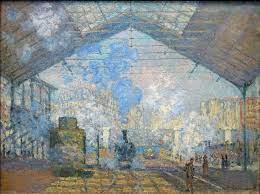

116. The Saint-Lazare Station. Claude Monet. 1877 CE Oil on canvas.
- Form
- Effects of steam, light, and color; not really about the machines or travelers
- Subtle gradations of light on the surface
- Forms dissolve and dematerialize; color overwhelms the forms
- Figures are painted in a sketchy way with brief brushstrokes
- Content
- The painting depicts the interior of a train station in Paris; a modern marvel of engineering
- Trains were propelled by steam; accenting on the energy of the steam rather than the train that produces it
- History
- Exhibited at the Impressionist Exhibition of 1877
- Context
- One of a series depicting this train station
- Monet is famous for painting a series of paintings on the same subject at different times of the day and days of the year
- Originally meant to be hung together for effect: Haystacks were his first group to hang this way
- Shows modern life in Paris with great industrial iron output
- New view of modern city that reflects Haussmannś redesign of Paris